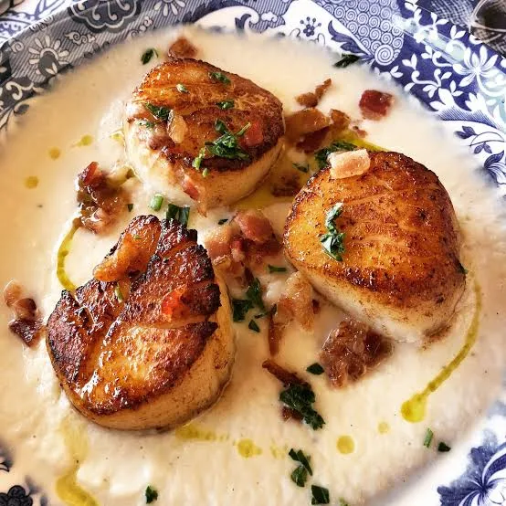

Return to Main Menu
Scallops on Cauliflower Purée

About This Dish
An elegant appetizer that pairs the sweetness of seared scallops with the creaminess of cauliflower.
Gather These Items
- 12 large sea scallops
- 1 head cauliflower
- 2 tbsp butter
- 1/4 cup milk or cream
Cooking Instructions
- Boil and blend the cauliflower with butter and milk until smooth.
- Dry the scallops and season them.
- Sear the scallops in a pan for 2 minutes on each side.
- Plate the purée and place the scallops on top.